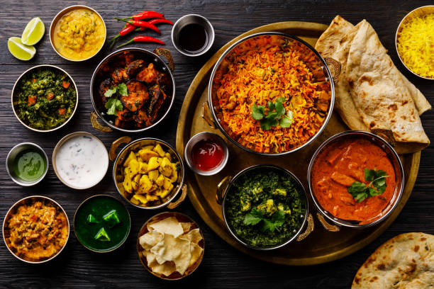
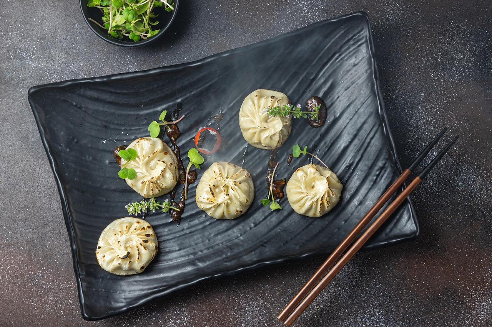
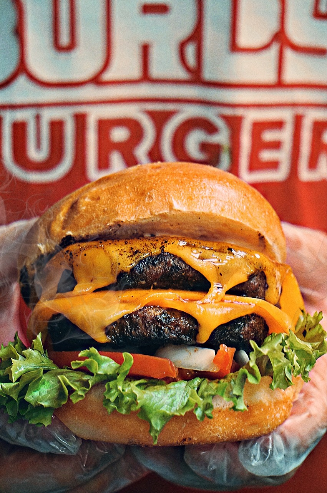

MAHARASHTRA FOODS
From the world-famous pav bhaji to the delicious poha, Maharashtra Food has a lot to offer. Food of Mahrashtra of Maharashtrian cuisine can be broadly classified into two styles- Konkan and Varadi. Konkan being from the coastal region has influences from Goan, Saraswat, Gaud and Malvani regions. Varadi cuisine, and Coconut are essential ingredients in the Maharashtrian kitchen. Maharashtrian cuisine is considered to be very diverse as the flavours and spice levels differ in different parts of the state.

AVALABLE DISHES


From the world-famous pav bhaji to the delicious poha, Maharashtra Food has a lot to offer. Food of Mahrashtra of Maharashtrian cuisine can be broadly classified into two styles- Konkan and Varadi. Konkan being from the coastal region has influences from Goan, Saraswat, Gaud and Malvani regions. Varadi cuisine, and Coconut are essential ingredients in the Maharashtrian kitchen. Maharashtrian cuisine is considered to be very diverse as the flavours and spice levels differ in different parts of the state.

